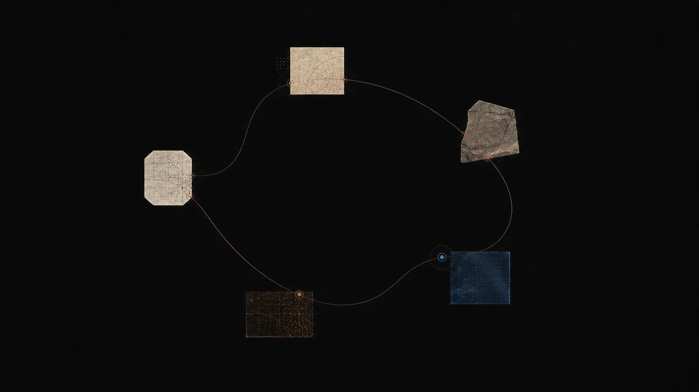
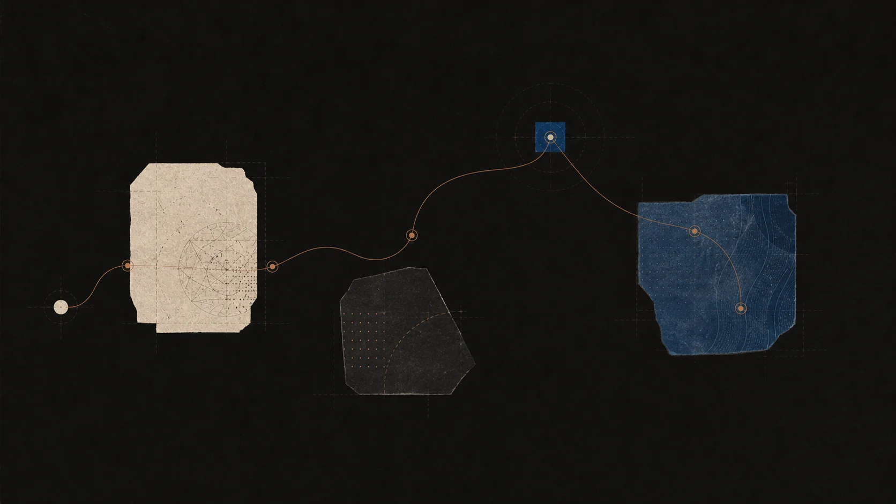

01 / 浮现
从最诚实的那一处不确定开始。
写下你能想到的最短的不完整句子。Socrates 会读取你周围的地图，给出更锋利的问题，而不是一个完成的答案。
沿着对话、回忆与连接，跟随一个想法慢慢展开。

Socrates 的练习
学习不只是累积答案，而是在恰当的时刻重新提出更好的问题。
Socrates 从你所在的地方开始，挑战假设，并帮你建立能留下来的理解。
一次会话如何展开
一次典型的 Socrates 会话大概十到二十分钟。你不是在搜索网页或滑动信息流，而是在和已经了解你整张地图的导师，把一个想法走过一遍。
01 / 浮现
写下你能想到的最短的不完整句子。Socrates 会读取你周围的地图，给出更锋利的问题，而不是一个完成的答案。
02 / 测试
导师会提出更小的例子、反例和边界条件。你的尝试也被摆在旁边，让推理过程始终可见。
03 / 复述
一段简短的、用你自己话的复述，会暴露最需要继续追问的部分。Socrates 会标出那个空缺，并给出更好的下一个问题。
04 / 重访
这次会话会变成你回忆队列里的一条小提示，和知识地图上的一个节点，让连接在下一次到来时更容易建立。
留下来的是什么
Socrates 不是信息流。每次对话都会留下一点点、可以反复使用的痕迹：问题、你的尝试、导师提出的更锋利的问题、以及它在地图上接入的位置。
常见问题
问题类型
最合适的是那些你会写在笔记本上的问题：一个几乎能讲清的想法、一段没有读进去的段落、一个会在中间断裂的概念。Socrates 不是为琐碎问答设计的。
主题
数学、统计、物理、计算机科学、哲学、语言学、生物、历史、写作、音乐理论等等。导师在技术性和人文类素材上都有不错的表现。
隐私
会话仅对你的账号可见，我们不会用你的对话训练模型。你可以从任何会话导出或删除它们，隐私页面列出了所有数据所在的位置。
模型
Socrates 会在合适的任务上选择最强的可用模型，并向你展示选项以便调整。你也可以从 API Keys 页面接入自己的服务商密钥。
上手
大多数人在十分钟之内就能感受到第一次有用的会话。建议先问一个真实的问题，写一段简短的复述，再让导师指出下一步该问什么。
价格
你可以用免费版和内置的 Beagle 导师开始。付费版解锁更多学习额度、知识地图、考试模式与更高上限。完整说明请见定价页。
一种不同的导师
Socrates 是为容易答案之后的那一刻而构建的——真正的工作还在前面。它对不确定保持耐心，对主张保持谨慎，对自己不知道的部分保持诚实。
